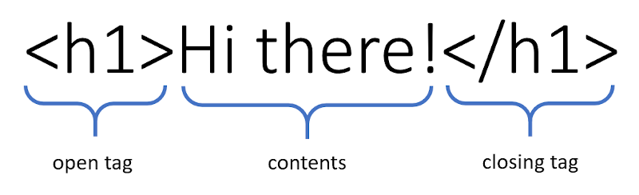
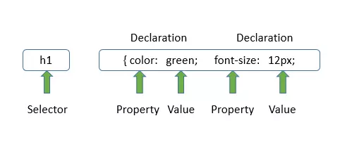
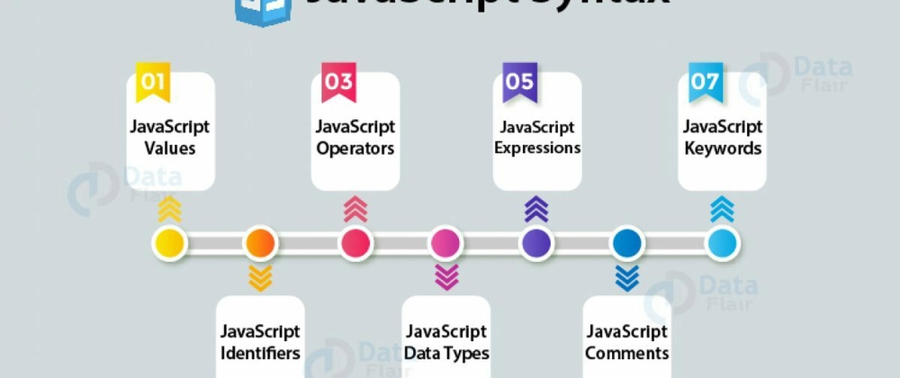

Lesson 3 • The Web Trio – HTML, CSS, and JavaScript
Goal: Understand the roles of HTML, CSS, and JavaScript in web development.
HTML stands for HyperText Markup Language. It is not a programming language; it is a marking language. It tells the browser what each part of your page is.
<h1> for a main title.<h2> for a secondary title.<p> for a paragraph.<img> for an image.<h1> tag will make the text big and bold, while a <p> tag will make it look like a regular paragraph.

(End of Page 1. Click Next to continue reading).
CSS stands for Cascading Style Sheets. This is what makes your website look professional, modern, and branded.
<h1> titles to blue."
JavaScript (JS) is the only true programming language of the three. It makes the page interactive.

Now that we understand how HTML, CSS, and JavaScript work as individual web
languages, how do they work together in practice?
Imagine a website as a car that
needs to be built, and web developers as the
mechanics who’ve been tasked with building it. They’ll take the blueprints —
which detail how the car should look in its final form — and turn them into a
physical and functioning car that can get the driver from A to B.
To carry through their vision, they have three tools in their arsenal:
First, they’ll use HTML to construct the car's basic structure or the ‘skeleton’. They’ll create door panels, wheels, trunks, and hoods that can be welded together. Not very aesthetically pleasing or functional, but HTML will get the car components built.
Next, CSS is used to embellish the car’s basic structure with style and function. Colors are added, as well as materials like leather seats, a wooden dashboard, and aluminium rims. Suddenly the car has gone from a bare-bones structure to something you’d actually want to drive.
Next, JavaScript is used to add interactivity and dynamic behavior to the car. Features like a GPS system, a music player, or even autonomous driving capabilities can be implemented. The car is now not just something you drive, but something that responds to your commands and enhances your driving experience.